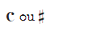

À propos du Piano
Voir l'appendice A pour l'identification des références.
Voir l'appendice B pour l'identification des piles.
Voir l'appendice C pour l'identification des ports.
Voir la page suivante pour l'identification des notes de musique
- Un module Piano présente 3 symboles musicaux dans l'indicateur supérieur et 12 touches de piano qui servent d'entrées.
- Chaque règle consiste en un ou plusieurs symboles et d'autres éléments de la bombe requis.
- Prenez les lignes une par une en parant du haut jusqu'à ce qu'une rassemble tous les critères nécessaires, puis exécutez la séquence de notes correspondante.
- En cas d'erreur, il faut à nouveau entrer la séquence de notes en entier.
| Symboles requis | Élements de la bombe requis | Séquence de notes |
| Le dernier chiffre du numéro de série est pair | Si♭ Si♭ Si♭ Si♭ G♭ A♭ Si♭ A♭ Si♭ | |
|  | La bombe comprend 2 piles ou plus | E♭ E♭ Ré Ré E♭ E♭ Ré E♭ E♭ Ré Ré E♭ |
| Mi Fa♯ Fa♯ Fa♯ Fa♯ Mi Mi Mi | ||
 |
La bombe comprend un port RCA | Si♭ La Si♭ Fa E♭ Si♭ La Si♭ F Eb |
| L'indicateur SND est présent et allumé | Mi Mi Mi Do Mi Sol Sol | |
| La bombe comprend 3 piles ou plus | Do♯ Ré Mi Fa Do♯ Ré Mi Fa B♭ La | |
| Sol Sol Do Sol Sol Do Sol Do | ||
| Le numéro de série contient un 3 un 7 ou un 8 | La Mi Fa Sol Fa Mi Ré Ré Fa La | |
| Sol Sol Sol Mi♭ Si♭ Sol Mi♭ Si♭ Sol | ||
| Pas de critère | Si Ré La Sol La Si Ré La |